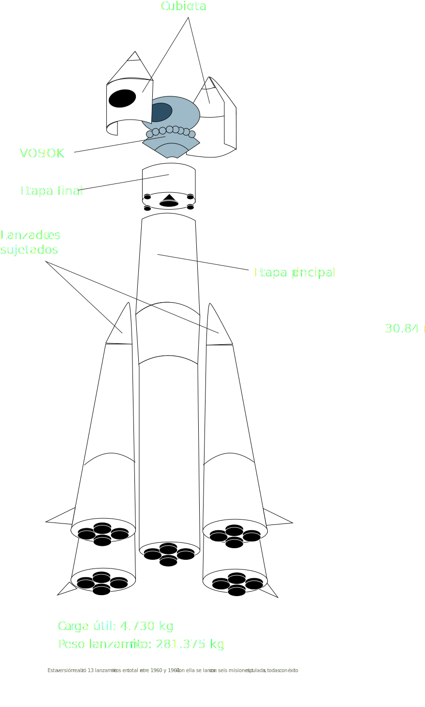
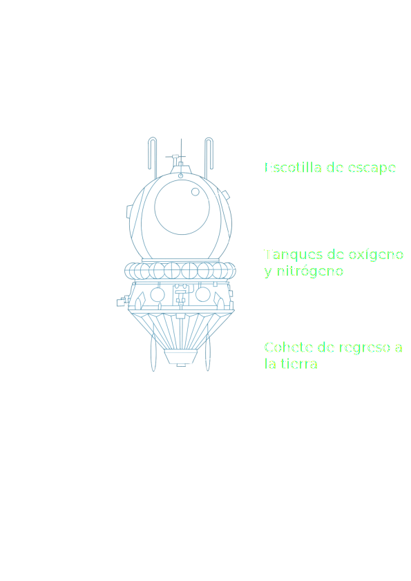

COHETE Y CABINA
Vostok K (8K72K)


La nave espacial Vostok estaba formada por una cabina esférica con un asiento para una persona, con una masa de 2,46 toneladas, diámetro de 2,3 metros y un módulo cónico para el equipamiento. La cabina estaba instalada sobre un módulo que contenía el sistema del motor. La nave fue puesta en órbita por el cohete SL-3, que permitía el desalojo del astronauta en caso de emergencia.
PRIMERA MUJER

En un principio se planearon dos vuelos simultáneos con tripulación femenina, pero en marzo de 1963 el proyecto fue rechazado y tan solo se aprobó un viaje con una tripulante. Es así como Valentina Tereshkova, se volvió la primera mujer en el espacio. Su nombre en clave durante la misión era “Chaika” (“gaviota” en español).
Para la misión se realizaron modificaciones tanto en el traje espacial como en el diseño de la nave para que estuvieran mejor adaptados al organismo femenino. Este vuelo también sirvió para demostrar los logros del socialismo en el ámbito de la técnica espacial y para demostrar que en la URSS las mujeres tenían iguales posibilidades que los hombres. Sin embargo, tuvieron que pasar 20 años para que otra mujer soviética volviera a salir al espacio.